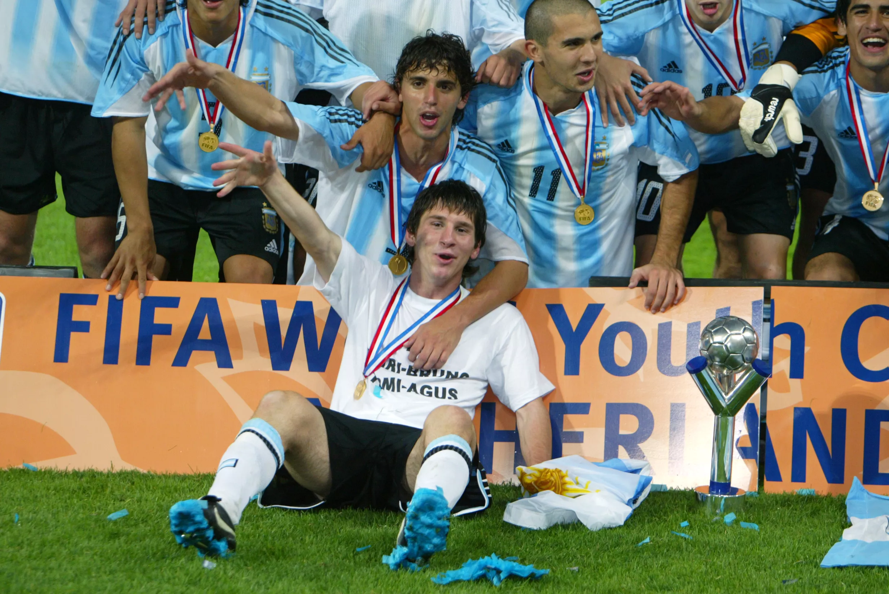
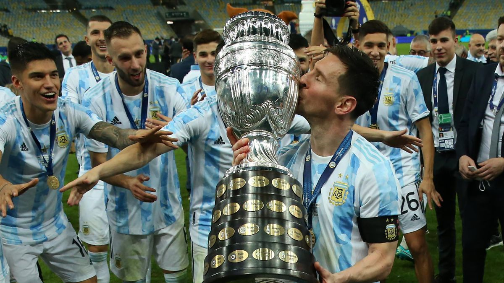
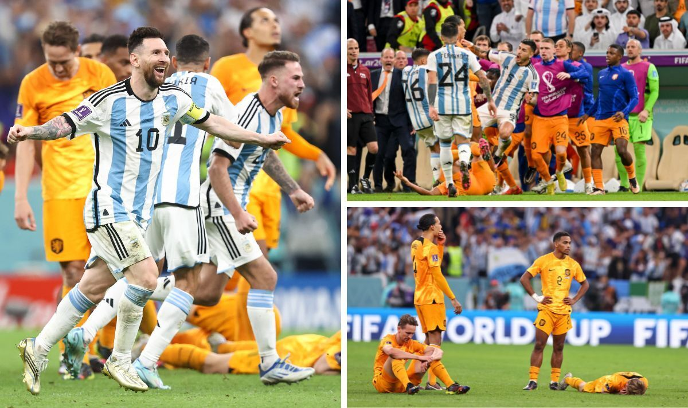

Messi’s international career with Argentina started in 2005. Although he was offered to play for the Spanish national team, he stayed true to his heart and represented his country. He started off playing for the under 20’s where in his first year they won the U-20 World Cup, which was held in the Netherlands. With Argentina as the champions and Messi as the top scorer with 6 goals, he won the best player of the tournament award. Messi was only 18 at the time and showcasing his skills to the world at a national level, scoring both goals in the finals, which they won 2-1 against Nigeria. This performance soon gave him the opportunity to play with the men’s team. In 2008, the Argentinian national team traveled to Beijing to compete in the Olympic Games. Beating the likes of Brazil in the semi-finals, and defeating Nigeria in the finals to a score of 1-0, the Argentinians won the tournament and received their first-ever Olympic gold medal.
The Copa América is a competitive tournament held every 4 years consisting of the top national teams from South America. The last time Argentina managed to capture this trophy was in 1993 against Mexico. In 2016, Argentina managed to reach the final against a competitive Chilean side. As the match went to penalties after a scoreless draw, Messi missed his penalty being the first shooter. This eventually came back to haunt Argentina as they lost to the Chileans, becoming runners-up. Messi was extremely disappointed as he had always had great success winning trophies for his club teams, although found it harder to win international trophies. In 2021 he had the opportunity to win the Copa América as Argentina found themselves in the finals against a tough Brazilian squad. In the end, Messi achieved an international trophy with his country and was also the scorer of the tournament with 4 goals, and won the Best Player award.
The 2022 World Cup hosted in Qatar was set to be Messi’s last-ever international tournament. Messi had won almost everything he could in his career, but there was still one more trophy that was on his mind. That was the World Cup. A lot of pressure was put upon Messi and the Argentina squad to perform well in the tournament. Unfortunately, they found themselves in a hole after losing their first game to Saudi Arabia 2-1, with Messi scoring the lone goal. In order for Argentina to advance to the knockouts their next two games were must-wins. They managed to win both games by a scoreline of 2-0 with Messi grabbing one goal against Mexico. Despite the rough start, Argentina found themselves topping the group. Their round-of-16 game was against Australia resulting in a 2-1 win with Messi finding his name on the scoresheet. As the quarter-finals approached, the Argentinians found themselves against a tough Dutch side. Although Argentina dominated throughout the match, a late equalizer by the Dutch sent the game into added time. With the score remaining equal, the game went to penalties where Argentina were victorious in advancing to the semi-finals. In the semi-finals, they battled against a tough Croatian side who were runners-up in 2018. They fought hard and won 3-0 and Messi managed to score another goal to help his side reach the final.
Despite fighting hard throughout the tournament Messi found himself in the same position he was in in the 2014 World Cup final. Argentina made it to the final in 2014 and lost 1-0 to Germany, but this time Messi made sure his team would be victorious. As the game started Argentina managed to win a penalty in the 22nd minute and Messi slotted it in the back of the net to give them the lead. Shortly later, Argentina found themselves up 2-0 with a goal by Angel Di Maria. Argentina was 2-0 at the half and had a comfortable lead. Despite being ahead, the French men found themselves with an opportunity to score as they had won a penalty in the 79th minute. Mbappe stepped up and scored. Only 2 minutes later the French were hungry for another and with a relentless press on the Argentinian defense, Mbappe found himself hitting the back of the net with a side volley making the game tied at 2. Argentina started to worry as they had blown their lead and with all the momentum going France’s way, surely they were destined for another goal. The game remained tied at 2 all during regulation and went to extra time. In the 107th minute, Argentina found themselves going ahead as Messi scored. Surely the game was over. France held their heads high and managed to win a penalty in the 116th minute and Mbappe stepped up once again, scoring. Tied at 3-3 the game went to penalties where Argentina found themselves victorious after one hectic game. Messi had received man of the match for the finals, although most importantly he had won the most prestigious tournament any player could possibly win; the World Cup.